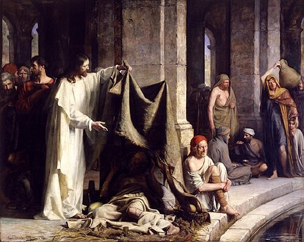
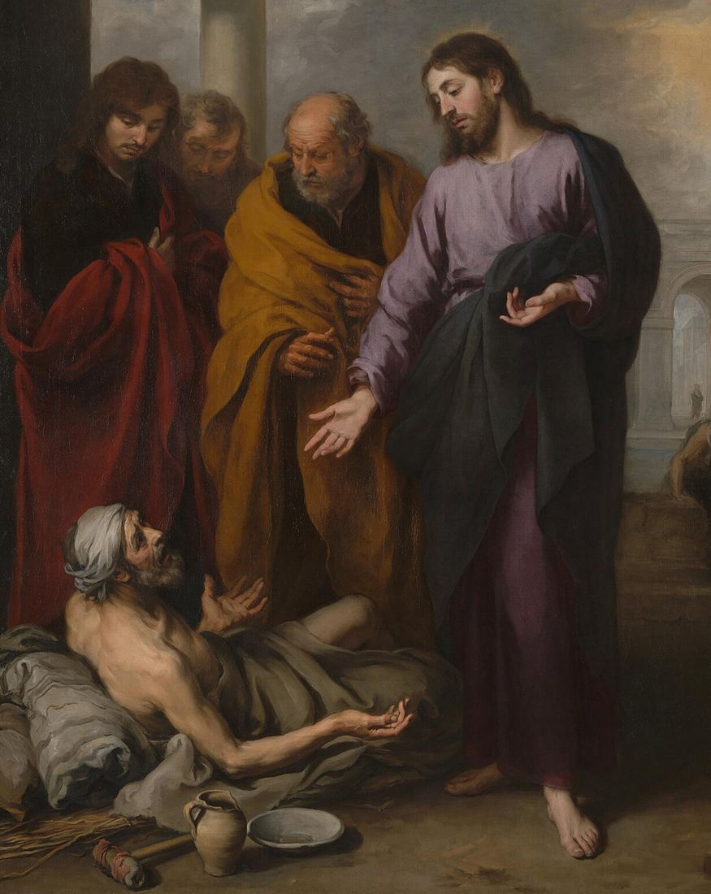
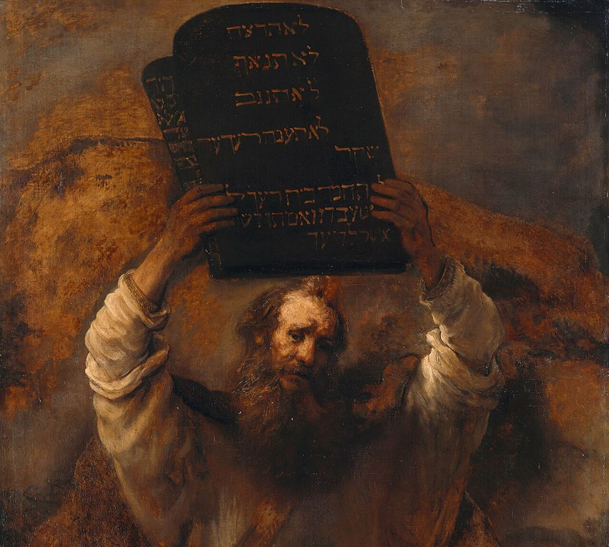

John 5
Wilt thou be made whole?
Jesus heals a man who had been sick for thirty-eight years, then tells the leaders exactly who he is.
Things to watch for
Keep these questions in the back of your mind as we read. We'll come back to every one of them at the end.
- Wanting to be wholeWhy would Jesus ask a sick man if he wants to get well?
- GraceWhat did the man do to earn his healing?
- Staying freeWhy did Jesus tell the healed man to sin no more?
- Who Jesus isDid Jesus claim to be equal with God?
- AssuranceCan a believer know for sure that he has everlasting life?
- The ScripturesWho is the Bible really about?
Part one
The pool of Bethesda
Verses 1–16
A crowd of sick people wait by the water. Jesus walks up to one of them.
A hospital with no doctor
Bethesda means house of mercy. It sat by the sheep market of Jerusalem, with five porches round the water.
A porch was a covered walkway with a roof held up by columns: shade from the sun, and a place to lie down. Every one of them was full of sick people.
They were all watching the water. When it stirred, the first one in was healed. Think what that meant: the cure went to the quickest. The man who needed it most could never win that race.
Old words, plainly
Every man under those porches was stuck. Most of them had been there a long time. They had all heard the promise, and they were all waiting for their turn.
Some of us know that place. We waited for something to stir, for the right moment, the right program, the right break, while somebody else always seemed to get there first.
Thirty-eight years
one dot for every year
That's longer than Jesus had been alive. He was about thirty when he started his ministry (Luke 3:23). This man had been sick since before Jesus was born.
It's also exactly how long Israel wandered in the wilderness after they refused to trust God:
“And the space in which we came from Kadesh-barnea, until we were come over the brook Zered, was thirty and eight years; until all the generation of the men of war were wasted out from among the host, as the LORD sware unto them.”
Deuteronomy 2:14

JesusWilt thou be made whole?
The manSir, I have no man, when the water is troubled, to put me into the pool: but while I am coming, another steppeth down before me.
not a yes
Jesus asked a yes-or-no question. The man answered with the reasons it couldn't happen: nobody to help, always too slow, always beaten to it.
After thirty-eight years, a man can get used to the mat, and the excuses come out before the hope does. Jesus asks anyway, and he asks you too: Do you really want to be made whole?
And notice: “I have no man.” He was alone. But the Man he needed was standing right in front of him.

Rise,·take up thy bed,·and walk.
No pool. No angel. No race to the water. Jesus just spoke, and “immediately” the man was made whole.
His “bed” was a thin mat or pallet, light enough to roll up and carry. For thirty-eight years that mat had carried him. Now he carries it.
Jesus didn't ask him to try harder, or to get to the water on his own. He told him to do the one thing he couldn't do, and with the command came the power to do it.
They saw the mat, not the man
What God said
Rest on the seventh day
“In it thou shalt not do any work” (Exodus 20:10). A gift: one day in seven to rest and remember the Lord.
What they added
A rule for everything
Their teachers listed 39 kinds of forbidden work. One was carrying a thing from one place to another. So carrying a rolled-up mat broke the rules.
A man who couldn't walk for thirty-eight years is walking, and the first thing they say is “put that down.” Nobody asks what happened to him. Religion without love can always find something wrong.
“Wist not” means didn't know. Jesus had “conveyed himself away”, slipped off into the crowd. The man didn't even know his name yet.
Whole first, then “sin no more”
Jesus went looking for him: “Jesus findeth him.” And look at the order. He didn't say, “Clean up, then I'll heal you.” He healed him, then told him how to live. Grace comes first. Obedience is the answer to grace, not the price of it.
Not every sickness comes from a man's own sin (John 9:3). But Jesus is warning him: the old way leads somewhere worse than a mat by a pool. Every man who has been set free and gone back knows that's true.
“Stand fast therefore in the liberty wherewith Christ hath made us free, and be not entangled again with the yoke of bondage.”
Galatians 5:1
Part two
Equal with God
Verses 17–30
They want to kill him for healing on the sabbath. He answers by telling them who he is.
They understood exactly
“Hitherto” means up to now. God rested from creating on the seventh day, but he never stopped holding the world together or showing mercy, sabbath or not. Jesus says, “and I work”: what My Father does, I do.
Some people say Jesus never claimed to be God. His enemies knew better. They wanted to kill him for it, and he didn't correct them. He went on to say even more.
The Father and the Son
To quicken means to make alive. Only God gives life, only God judges every man, and only God is to be worshipped. Jesus claims all three. You can't call him just a good teacher after this. Either he is God, or he is not good.
“The Son can do nothing of himself” (v. 19) doesn't mean he is weaker. It means he never acts apart from the Father. They are perfectly one.
One verse, three tenses
Who is it for? “He that heareth… and believeth.” That's all. And it isn't “will get life someday if he holds out.” He hath it, today. A life that can be lost wouldn't be everlasting.
“There is therefore now no condemnation to them which are in Christ Jesus, who walk not after the flesh, but after the Spirit.”
Romans 8:1
Two times the dead hear his voice
“And now is” · verse 25
Men who are dead in sin hear the Son of God, believe, and come alive. It's happening today, every time someone is saved.
“The hour is coming” · verses 28–29
Every body in every grave will hear his voice and come out, some to life, some to judgment.
Does verse 29 mean we are saved by doing good? No. Verse 24 already told us how a man passes from death to life: by hearing and believing. The good is what that new life produces. It's the fruit, not the root.
“For by grace are ye saved through faith; and that not of yourselves: it is the gift of God: Not of works, lest any man should boast.”
Ephesians 2:8–9
Part three
Witnesses
Verses 31–47
Jesus calls his witnesses to the stand, and the case against unbelief is closed.
Called to the stand
Under the law, a case was settled “at the mouth of two witnesses, or at the mouth of three witnesses” (Deuteronomy 19:15). Jesus calls more than enough.
John was a lamp, lit by Another, and the people enjoyed his light “for a season.” But the evidence never ran short. The problem was never a lack of proof. Verse 40 says what it was.
The whole Book points to him
These men knew the Scriptures better than anyone. They memorized them. And they missed the Person the Scriptures were about.
After his resurrection, Jesus did this very thing with two of his followers: “beginning at Moses and all the prophets, he expounded unto them in all the scriptures the things concerning himself” (Luke 24:27).
Reading the Bible isn't a box to check. “Ye will not come to me.” The point of the Book is to bring you to him.
Whose approval do you need?
Jesus puts his finger on what kept them from believing. It wasn't their heads. It was that they lived for each other's approval.
A man who needs the crowd's approval can't follow Jesus, because sooner or later the crowd will go one way and Jesus another. Lots of us drank, used, or ran with the wrong crowd partly to be accepted. Faith starts when God's opinion of you outweighs everyone else's.

The witness they trusted
These men were proud to be followers of Moses. Jesus says Moses is the one who will stand up in court against them, because Moses wrote about him:
“The LORD thy God will raise up unto thee a Prophet from the midst of thee, of thy brethren, like unto me; unto him ye shall hearken;”
Deuteronomy 18:15
You can't believe Moses and reject Jesus. Moses' law showed them their sin. Moses' lambs and sacrifices showed them that blood had to be shed. Moses' promise of a Prophet pointed straight at Jesus. The whole law was a signpost, and they were standing at the sign, refusing to go where it pointed.
Points to remember
- Wanting to be whole“Wilt thou be made whole?” 5:6Jesus asks because it's possible to get used to the mat. Be honest: do you want it?
- Grace“Rise, take up thy bed, and walk” 5:8He did nothing to earn it. Jesus came to him and healed him by his word.
- Staying free“Sin no more, lest a worse thing come unto thee” 5:14Grace first, then the call. Don't go back to what had you bound.
- Who Jesus is“Making himself equal with God” 5:18He gives life, judges all, and is honoured as the Father is. He is God.
- Assurance“Hath everlasting life” 5:24Whoever hears and believes has it now, and will never come into condemnation.
- The Scriptures“They are they which testify of me” 5:39The whole Bible points to Jesus. Read it to come to him.
Question 1 of 6
Wanting to be wholeWhy would Jesus ask a sick man if he wants to get well?
What verses tell us about this?
Answer
Because after thirty-eight years, a man can get used to being sick. The man answered with excuses, not a yes. Jesus wants us honest about whether we really want to be made whole, and then he does what we never could.
Question 2 of 6
GraceWhat did the man do to earn his healing?
What verses tell us about this?
Answer
Nothing. He couldn't get to the water, he didn't ask Jesus for help, and he didn't even know his name. Jesus picked him out of the crowd and healed him with a word. That's grace: God's gift to people who can't earn it.
Question 3 of 6
Staying freeWhy did Jesus tell the healed man to sin no more?
What verses tell us about this?
“Stand fast therefore in the liberty wherewith Christ hath made us free, and be not entangled again with the yoke of bondage.”
Galatians 5:1
Answer
Because he loved him. Jesus healed him first, then warned him that going back to sin would lead somewhere worse. Grace sets us free. The call to “sin no more” is how we stay out of the chains we were set free from.
Question 4 of 6
Who Jesus isDid Jesus claim to be equal with God?
What verses tell us about this?
Answer
Yes. He called God his own Father, and his enemies understood that as claiming to be equal with God. He didn't take it back. He said he gives life, judges every man, and must be honoured just as the Father is. Only God can say that.
Question 5 of 6
AssuranceCan a believer know for sure that he has everlasting life?
What verses tell us about this?
“There is therefore now no condemnation to them which are in Christ Jesus, who walk not after the flesh, but after the Spirit.”
Romans 8:1
Answer
Yes. Jesus said whoever hears his word and believes hath everlasting life right now, shall not come into condemnation, and is passed from death to life. That's a done deal, resting on his promise, not on how well we hold on.
Question 6 of 6
The ScripturesWho is the Bible really about?
What verses tell us about this?
Answer
Jesus. The Scriptures “testify of me,” and Moses “wrote of me.” You can know the Bible and still miss him, like these men did. The point of reading it is to come to Jesus and have life.
Prayer requests
What can we pray about for you today?
“He healeth the broken in heart, and bindeth up their wounds.”
Psalm 147:3